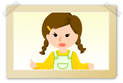

高齢になっても、認知症になっても、人はそれまでのように住みたいところに住み、したいことをして暮らす権利があります。
日々の生活をその人の望んでいるものにできる限り近づけるような自立支援を行うことが重要です。自らの意思に基づき、自立した質の高い生活が送れるよう私たちは支援していくことが望まれます。
認知症になってももっている能力と障害とされている機能を適切に評価、把握し、その人らしい生活ができるような支援と、その人にみられる不自由を埋めるような支援を心がけることが重要です。
次に個々の症状に対してのケアについて具体的に取り上げますが、認知症のために生じた行動について言葉だけではとらわれないようにします。
例えば「徘徊」という熟語だけで考えると認知症の人の徘徊をどう止めさせるのかということだけに注意がいき手がかりがないからです。 |